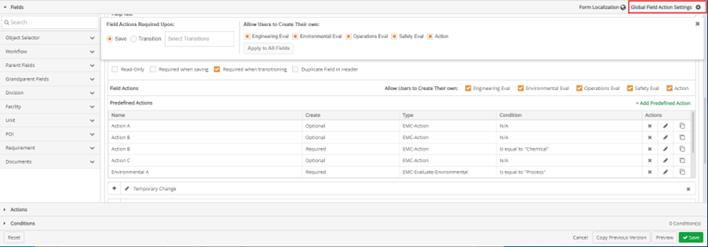

In the Designer mode, under the Fields ribbon of a particular workflow, click Global Field Actions Settings found on the right of the Fields ribbon. A drop-down window appears. Global Field Actions Settings can be used to set when field actions are required upon, and to set which field actions user can create their own actions for.
